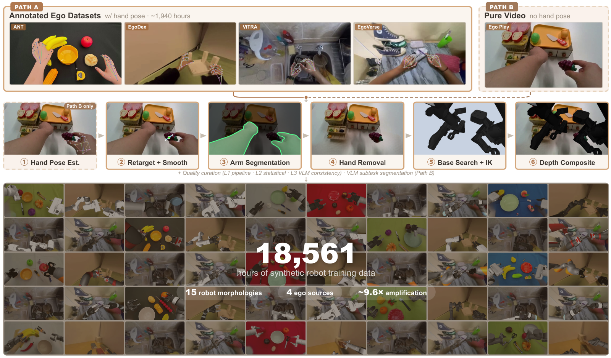
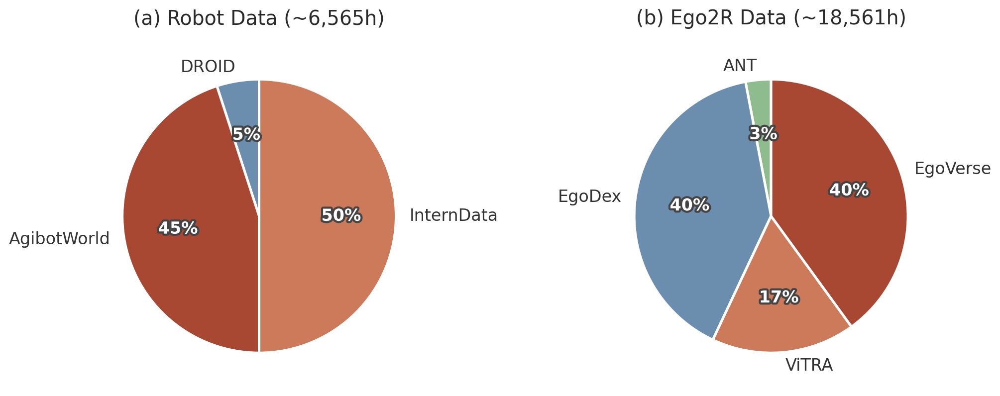
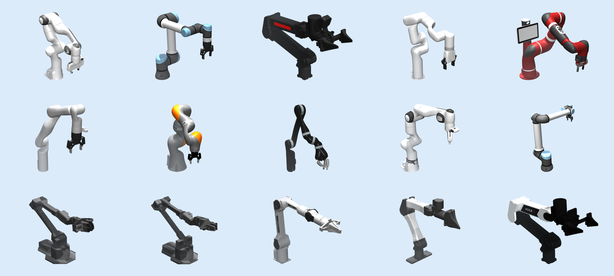
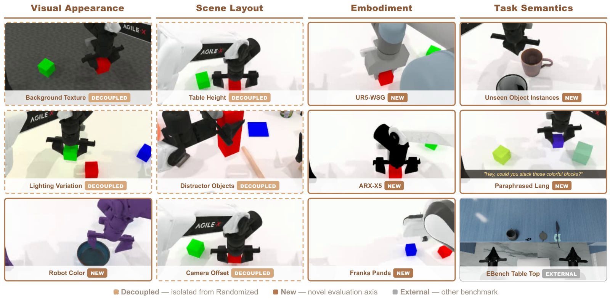
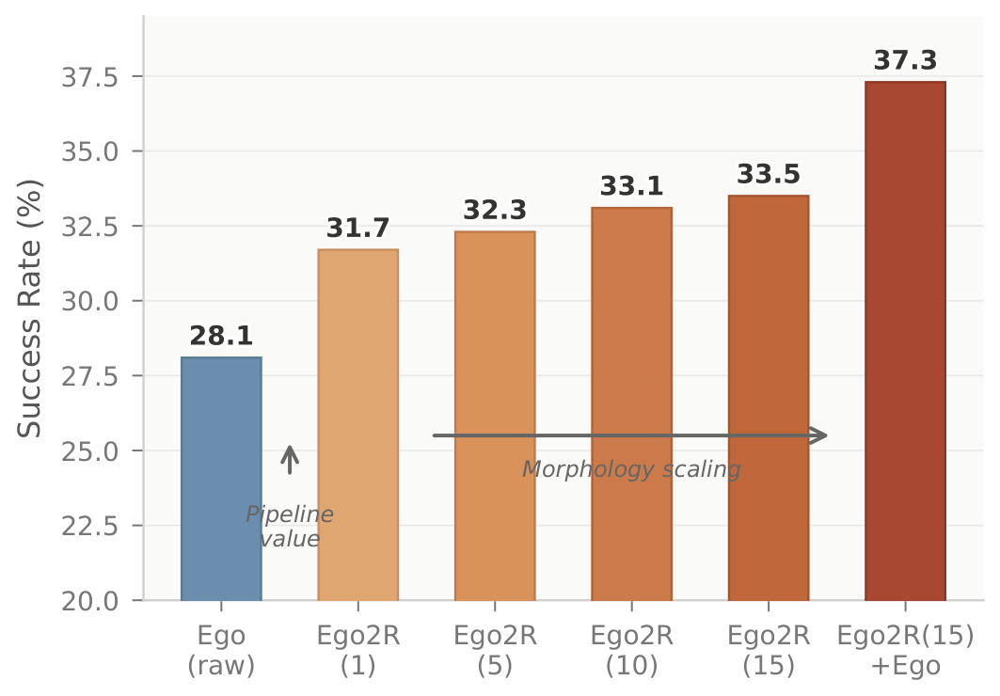
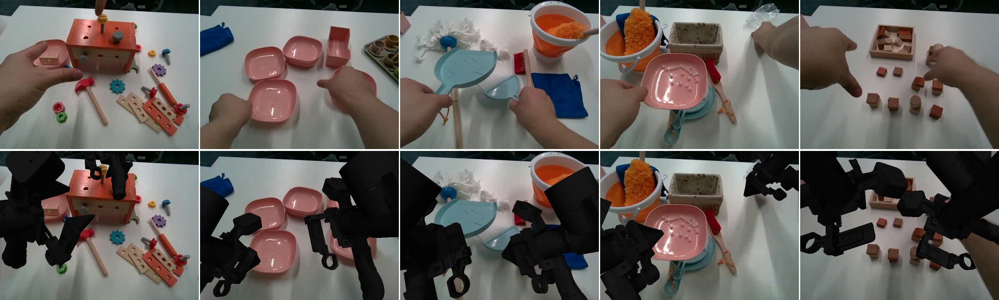
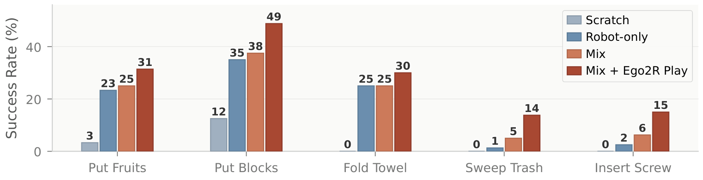
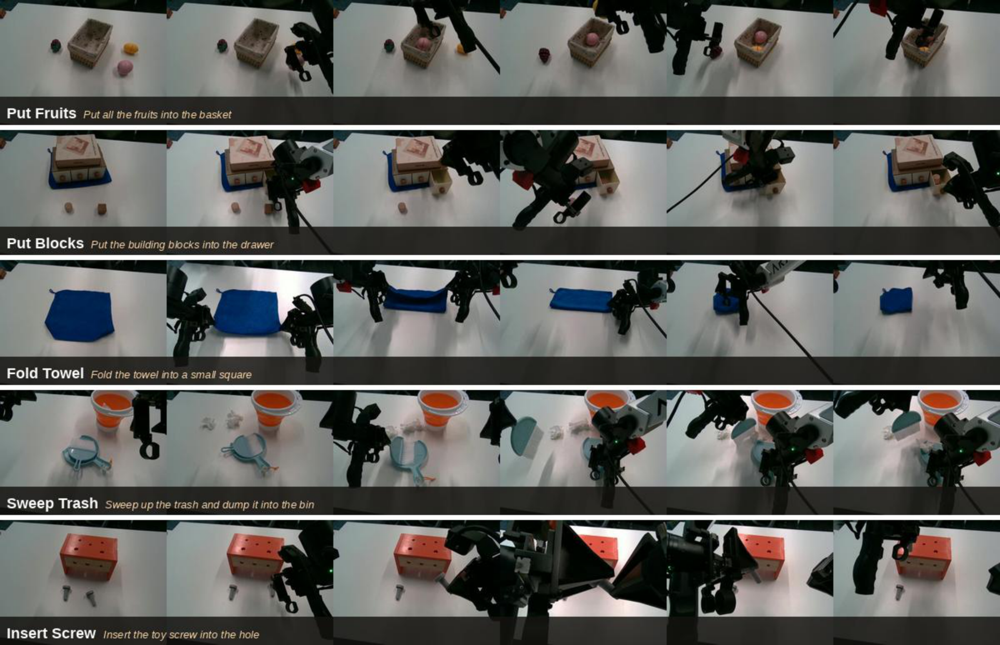

1AIM3 Lab, Renmin University of China 2Qwen Team, Alibaba Inc.
3ShanghaiTech University 4Beijing Institute for General Artificial Intelligence (BIGAI)
5Beijing University of Aeronautics and Astronautics
∗Equal contribution †Corresponding author
Learning generalizable robot manipulation policies requires large-scale and diverse demonstration data. Egocentric human manipulation videos offer rich scene and task diversity, and prior work has shown that retargeting and rendering such videos into robot-format data can yield effective per-task policies at small scale. However, whether this approach can provide pretraining benefits for vision-language-action models at scale remains unexplored.
We present Ego2Robot, a scalable pipeline that converts egocentric human manipulation videos into robot training data through action retargeting, robot-arm visual synthesis, and multi-level quality curation. Ego2Robot supports both curated datasets and in-the-wild videos, producing 18,561 hours of robot training data spanning 15 robot morphologies, making it the largest ego-to-robot dataset to date. To evaluate generalization, we extend RoboTwin 2.0 with disentangled perturbation axes covering visual appearance, scene layout, embodiment morphology, and task semantics. Experiments show that joint pretraining on Ego2Robot-synthesized and robot data consistently improves out-of-distribution generalization across multiple perturbation types, with benefits validated on real-robot deployment.
Given egocentric video of human hand manipulation, the pipeline produces embodiment-specific robot training data in three stages. It supports two input paths: Path A uses ego datasets with existing hand-pose annotations; Path B estimates hand poses from raw video (WiLoR per-frame reconstruction + DynHaMR temporal optimization), then both paths share a unified pipeline that renders any of 15 morphologies in parallel.

Retarget hand keypoints (thumb, index/middle tips, wrist) into gripper TCP, width, and orientation; smooth with Savitzky–Golay + SLERP.
SAM 3 arm segmentation → ProPainter hand removal → robot base-pose search → IK solving → depth-aware compositing into the inpainted scene.
Three levels: L1 pipeline-internal (IK failures, collisions, outliers), L2 statistical (extreme values, discontinuities), L3 VLM video–action consistency.
Applied to four egocentric sources — ANT (7h, in-house), EgoDex (732h), ViTRA (249h), and EgoVerse (954h), ~1,940h total — and rendered across 15 morphologies to yield 18,561h of synthetic robot data, co-trained with ~6,565h of real robot data (DROID, AgibotWorld, InternData).


Existing protocols bundle many distribution shifts into a single OOD score. We extend RoboTwin 2.0 with 11 independent perturbation settings plus the external EBench (higher-mounted camera, closer to the egocentric view), decoupling four generalization axes.

Background, lighting, and robot-color shifts.
Table height, distractors, and camera offset.
Zero-shot to UR5, ARX, Franka (vs. Aloha-Agilex).
Unseen objects (50 tasks) and 505 paraphrased instructions.
A VLA (Qwen3.5-4B backbone + Diffusion Transformer action head, 32-step camera-frame relative EEF chunks) is pretrained under four configurations (robot-only, plus Ego2R:robot at 1:3, 3:1, 1:1), finetuned on RoboTwin's 50 clean-setting tasks (Aloha-Agilex), and evaluated per perturbation. Every pretraining run uses identical hyperparameters (200K steps × batch 12 × 8 GPUs) and thus processes the same ~19.2M frames, so comparisons are fair regardless of dataset size.
| Pretraining | Clean | Rand | Visual | Scene | Embody | Task | EBench |
|---|---|---|---|---|---|---|---|
| Robot-only | 62.2 | 50.9 | 61.4 | 52.9 | 23.8 | 46.2 | 39.6 |
| Ego2R + Robot (1:3) | 61.4 | 51.0 | 61.2 | 52.5 | 21.9 | 49.5 | 47.4 |
| Ego2R + Robot (3:1) | 64.1 | 49.2 | 62.7 | 54.3 | 28.2 | 51.6 | 51.7 |
| Ego2R + Robot (1:1) | 68.1 | 53.5 | 67.3 | 56.9 | 27.2 | 54.1 | 49.8 |
Success rate (%) on RoboTwin 2.0 (per-dimension) and EBench. Bold = best in column; green = >5% gain vs. Robot-only.
| Pretraining | BG | Light | Color | Height | Clutter | Camera | ARX | UR5 | Franka | Obj | Lang |
|---|---|---|---|---|---|---|---|---|---|---|---|
| Robot-only | 66.6 | 58.2 | 59.4 | 60.1 | 48.3 | 50.4 | 44.1 | 20.2 | 7.0 | 29.3 | 63.1 |
| Ego2R+Robot (1:3) | 65.0 | 58.3 | 60.3 | 58.6 | 49.3 | 49.6 | 43.7 | 17.6 | 4.5 | 36.8 | 62.2 |
| Ego2R+Robot (3:1) | 65.5 | 60.9 | 61.8 | 62.0 | 49.2 | 51.6 | 47.6 | 31.4 | 5.6 | 40.0 | 63.1 |
| Ego2R+Robot (1:1) | 70.3 | 65.8 | 65.8 | 62.4 | 52.0 | 56.3 | 51.2 | 25.0 | 5.3 | 39.6 | 68.5 |
Per-perturbation breakdown (%). Columns: Visual (BG, Light, Color), Scene (Height, Clutter, Camera), Embodiment (ARX, UR5, Franka), Task (Obj, Lang). Bold = best in column; green = >5% gain vs. Robot-only.
Ego-only pretraining (no robot data) isolates the pipeline's contribution. Training on raw ego alone reaches only 28.1% on RoboTwin Randomized; processing through the pipeline (single morphology) lifts it to 31.7% (+3.6). Scaling 1→15 morphologies improves to 33.5%, and adding raw ego alongside 15-morphology data jumps to 37.3% — raw ego acts as a 16th "morphology".

On an ARX ACone platform across five long-horizon tasks, in a few-shot regime of only 20 teleoperated demonstrations per task, we compare Robot-only, Mix (Ego2R+Robot 1:1 pretraining), and Mix + Ego2R Play (same pretraining, but with pipeline-converted ego-play demonstrations mixed into the finetuning data — synthesized from casual first-person recordings of hand manipulation in the scene, ~7 min each). Mix + Ego2R Play is best on all five tasks.


